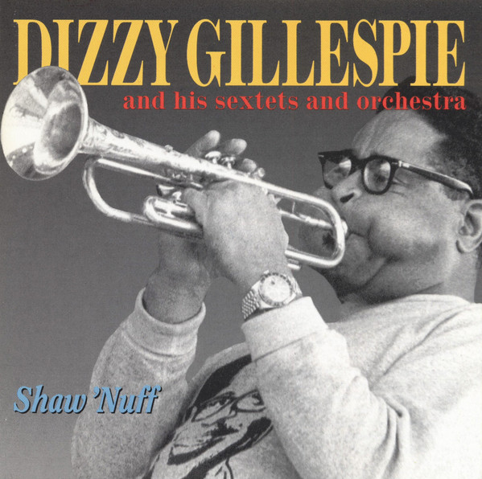

Dakota
Sort by Album
Sort by Artist
Sort by Release Date
Sort by Rating
Shuffle
Melodic Mosaic

Sonic Footprint
Figures Unveiled: Spotlight on Stats
Top Creatives
Point Leaders
Genre Highlights
Jazz Jaunt